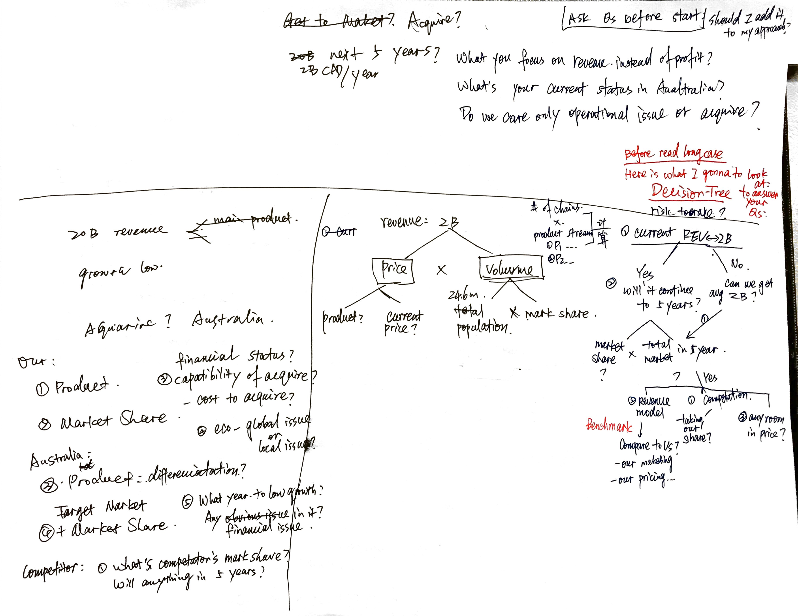
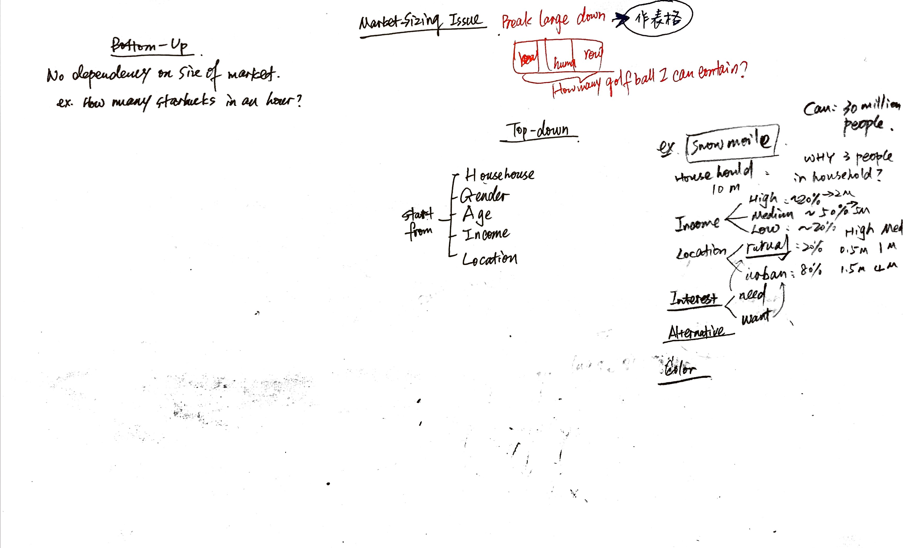

(Updating) Consulting Tookit - Make Profit
This post contains all terms/frameoworks with problem of `will our company make profit?`, `what should we do next?`.
Walkin Workshop
Decision Tree Build - Some tips about approaching issue

Market Size Structure

Check post about market share for related information.
Fixed v.s. Variable
Understanding issues such as: which of these costs are the main drivers and which have changed over time, will help you to better understand the firm’s profitability.
Short & Long Run
-
Short run (a couple of months): most costs are considered fixed since the firm is typically obligated to pay for purchased materials and cannot easily layoff workers -
Long Run (a couple of years): many costs become variable – a firm can decide to purchase less raw material, reduce or increase its workforce and possibly sell some of its capital
when firms are making short run decisions, it is only relevant to consider Variable costs, since Fixed costs cannot be easily adjusted.
In the long run, almost all costs may be considered variable and should be considered in the firm’s decision-making process.
Fixed Cost
-
a fixed cost must be paid even if there is no output.
-
These costs are incurred by the firm on a recurring basis but are generally recoverable if the firm is shut down
-
Examples of fixed costs are: Rent, Plant Maintenance, Overhead, Insurance, and possibly a small number of fixed employees (CEO).
Committed Fixed Cost
约束性固定成本是指管理当局的决策不能随意改变其支出数额的固定成本，用于形成和维护经营能力、对生产经营能力有约束力的固定成本，因而也称为经营能力固定成本。例如，厂房及机器设备按直线法计提的折旧费、房屋及设备租金、不动产税、财产保险费、照明费、行政管理人员的薪金等，均属于约束性固定成本。
Discretionary Fixed Cost
酌量性固定成本也称为选择性固定成本或者可调整固定成本，是指管理当局的决策可以改变其支出数额的固定成本。例如，广告费、职工教育培训费、技术开发费等。这些成本的支出是可以随企业经营方针的变化而变化的，基本特征是其绝对额的大小直接取决于企业管理当局根据企业的经营状况而做出的判断。
Variable Cost
Ask for variable cost: How has this mix of expenses changed over the past five years?
- Variable costs may change based on the increase or decrease of a firm’s output
- Examples of Variable costs are: Wages, salaries.
Sunk Costs
-
Expenditures that have been made and cannot be recovered.
-
Since sunk costs cannot be recovered, they should not be considered when making future economic decisions for the firm.
-
Examples:
Advertising,licensing fees,equipment that was purchased for one useand cannot be converted for another use.
Marginal Cost
- Incremental cost of producing an additional unit of output.
- Marginal costs is
equal to the increase in variable costsorthe increase in total cost that results from an extra unit of output.
Opportunity Cost
- Opportunity cost is the cost associated with opportunities that are foregone by not putting the firm’s resources to their highest-value use.
Break-Even Point
Usage
- Assessing the necessary revenue / cost balance
- Determine the minimum revenue a company must achieve in order to cover (or pay for) its total costs. At break even, a firm is not making a profit but simply covering its costs.
Calculation
Total Revenue = Total Costs(Price * Quantity Sold) = (Fixed Costs + Variable Costs)
Throughput Rating
Calculation
I=R*T
-
Iis the number of units contained within the system, inventory; -
Tis the time it takes for all the inventory to go through the process, flow time; -
Ris the rate at which the process is delivering throughput, flow rate or throughput.
Analysis
If any segement does not make profit or market share down, WHY? IS IT THE PROBLEM? CAN WE FIX IT?
Revenue Part
How much can we raise price?
• Does the firm have market power? • What is the demand elasticity? • Is the product differentiated? Are there additional goods and services that we can charge a premium for? • Are there substitutes? • How is our product mix priced?
How can we increase quantity?
• Sell products to new customers • Increase market share • Increase market growth • 4Ps (Price, Product, Promotion, Placement) • Sell new products to current customers
Cost Part
Don't forget cost after revenue!
Ask for BREAK-DOWN of Cost!
Common costs include
• Materials • Labor (wages & benefits) • SG&A • Overhead (rent, PP&L) • Depreciation • Capital costs • R&D
Common cost reduction technique
• Improve utilization of equipment • Outsource manufacturing • Consolidate purchasing • Relocate to lower cost areas • Partner with distribution companies (e.g., Federal Express) • Strategic use of IT
Example: MIT ManagementConsultingClub 2001-2002 Case Book and Interview Guide
Potential Methodology
- Pause for a moment and consider the central problem. Which of these facts are totally irrelevant?
- Eliminate them for now. Which facts are definitely related to the problem? Ask questions about facts that appear relevant. Probe for additional facts that the interviewer may have.
Interview example
Client is a leading food company that wants to develop a fresh prepared meal business. Trendamong consumers is toward fresher food with no artificial preservatives or coloring. Consumersare currently purchasing $5.0 billion of frozen meals – trend is toward more upscale products.
A fresh meal plate combing a protein, vegetable and starch is delicately arranged in a sealed plastic dome package. Nitrogen gas flushing is used to extend shelf life. Product is currently in limited consumer test at $5.50 to $8.50 per meal. Shelf life of product is 14 days – product will spoil in 21 days potentially causing food poisoning.
- Client wants to know if they can make money in this business
- Client wants to know if the market is big – how will they keep competition out
- Client wants a consultant to assist in building business case
Potential Methodology
Key problem: Profitability of Business and Size of Market
-
Problem understanding
-
Ask about
consumer test. What prices are consumers responding to? Are there any items spoiling on the shelf? - What is the
competitive structureof this market currently? -
What are the components of the company’s
cost structure? -
Structure Analysis
- What is the break-even point for the firm?
- Determine Gross Margin per Unit
- Determine Fixed Costs
- Divide to find break-even
- Estimate the size of the market (a case within a case)
-
Determine the market share they will need to break-even
-
Develop Recommendations
-
Discuss the
competitive structureof the market. - Can the firm realistically achieve the break-even market share?
Comments
Comments powered by Disqus